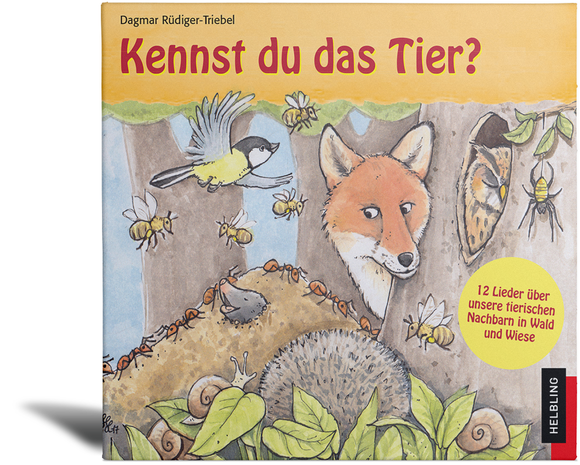

|

|
Gefallen Euch die Lieder?
12 Lieder von Dagmar Rüdiger-Triebel sind auch auf CD zu finden.
Jetzt bestellen auf www.helblingmusik4kids.de!
Emmi, die Biene, hat ´ne Cousine und lebt mit ihrer riesigen Familie im Bienenstock, während Manu, der Maulwurf, tief im Erdreich eine Würmersammlung für den Winter anlegt. In zwölf unterhaltsamen Liedern werden Tiere porträtiert, die in unseren Wiesen und Wäldern zu Hause sind. Von Dagmar Rüdiger-Triebel sind zwei weitere CDs zum Thema „Natur erleben“ erschienen: „Das Wunder vom Kirschkern“ (0–6 Jahre) und „Die Drachenschatzjagd“ (4–7 Jahre).